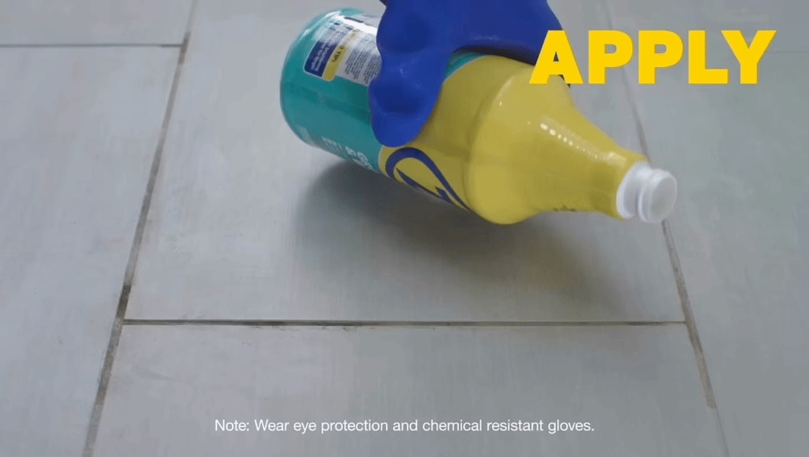
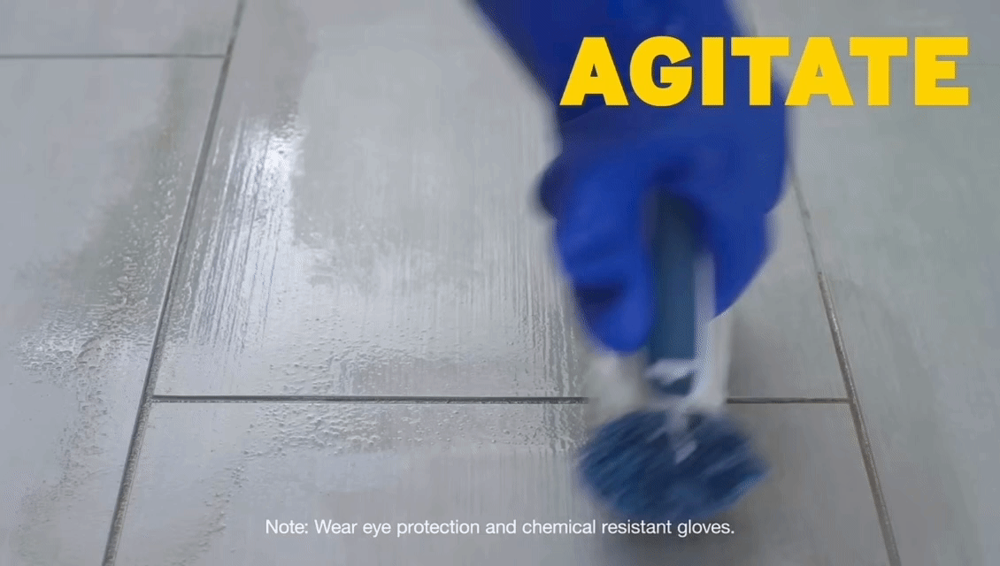
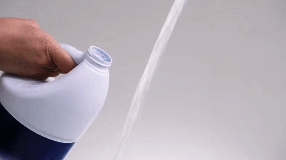

|
 |
 |
 |
 |
© 2024 The Bathroom Cleaning Hub, Physical Science Group 3, ICT 301, STI College San Jose Del Monte. All Rights Reserved.
Step 1: Apply and Wait
Start by applying a tile cleaner evenly across the tiled surface, ensuring you cover all areas, including grout lines where dirt and stains often accumulate.
Allow the cleaner to sit for a few minutes as directed on the label.



Zep. (2019, August 2). Floor grout Cleaner & Brightener [Video]. YouTube.